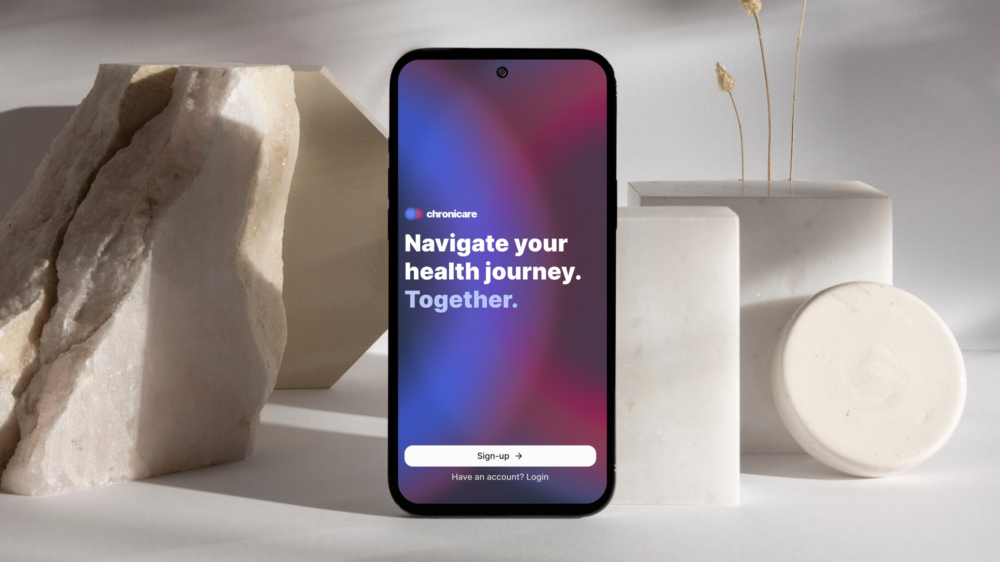
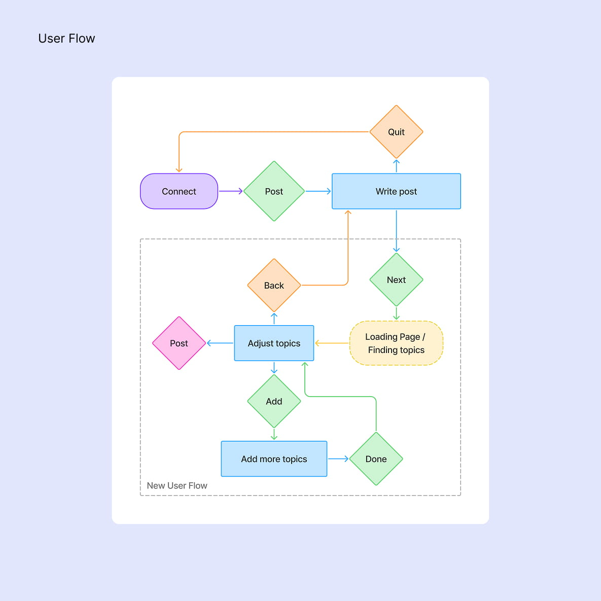
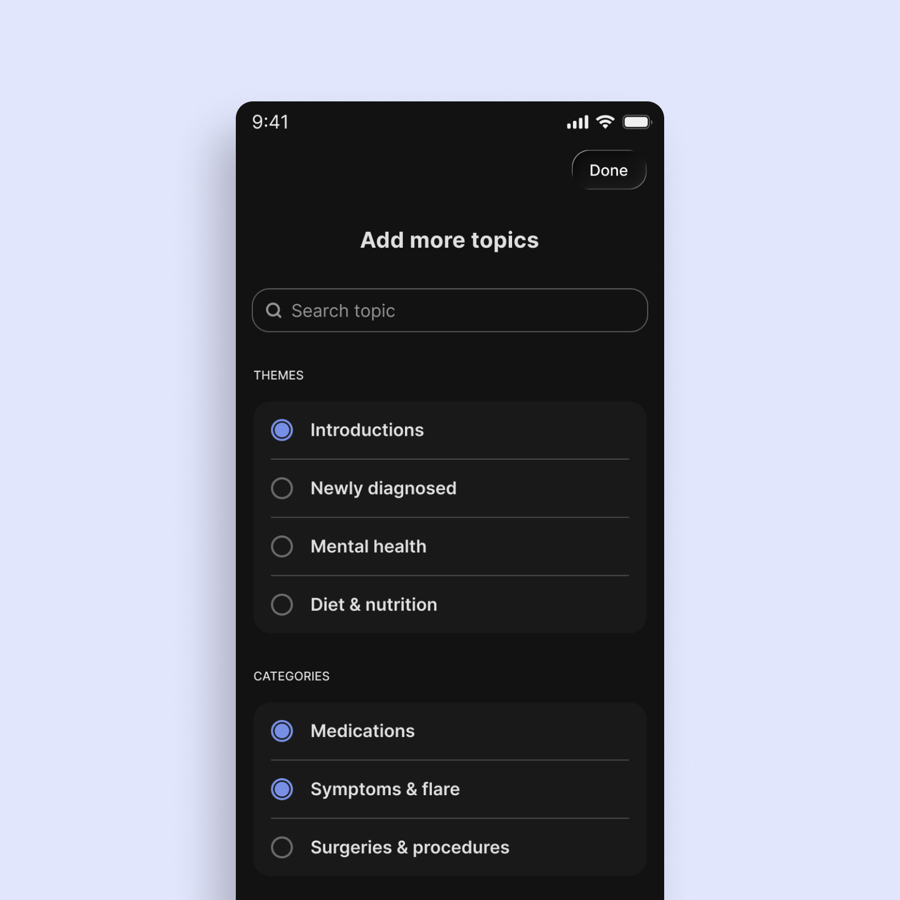
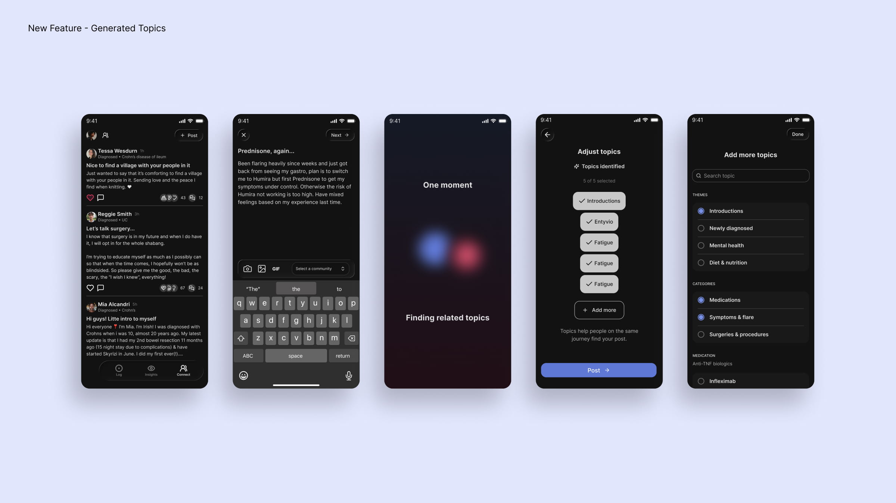

Product Design for the Chronicare App
Company
Chronicare
Industry
Digital Health (HealthTech)
Role
Product Designer
Responsibilities
Product Design • UX/UI Design • User Flows • Prototyping • Accessibility • Agile Collaboration

Overview
Chronicare is a digital health platform that empowers people living with chronic conditions to better understand and manage their health. By combining symptom tracking, personalised insights, and community support, it helps users identify patterns, make informed decisions, and build healthier daily habits.
My role
I contributed to the evolution of the Chronicare mobile app by improving existing experiences and designing new features that support people living with chronic conditions. Working closely with the founders and developers in an agile environment, I translated user needs and business goals into intuitive, accessible, and scalable design solutions.
My work included mapping user flows, exploring concepts through wireframes and prototypes, designing high-fidelity interfaces in Figma, and contributing to the design system to ensure a consistent experience across the app. To accelerate ideation, I used Claude Design to quickly explore design directions and iterate on concepts before refining them in Figma. Each feature was developed through an iterative process of collaboration, feedback, and refinement before developer handoff.
Feature: AI-Generated Topics
Context
The Connect section is where users share experiences, ask questions, and support one another throughout their health journey. To make conversations easier to discover, the team wanted every post to be automatically categorized with relevant topics, laying the foundation for a future topic-based search experience.
GOALS
01.
Design an AI-assisted topic generation flow
Design an intuitive flow that allows the LLM to analyze a user's post, suggest relevant topics, and give users the opportunity to review, edit, or add additional topics before publishing.
02.
Create a reassuring loading experience
While the AI processes the post, provide visual feedback that communicates progress and reassures users that their content is being analyzed.



Solution
I designed a lightweight flow that integrates AI-generated topic suggestions directly into the posting experience. After submitting a draft, users are presented with a dedicated loading state before reviewing the suggested topics. They can remove incorrect suggestions, browse additional topics, or add their own before publishing.
To make the waiting experience feel intentional, I designed an animation inspired by Chronicare's brand identity. Two gradient spheres derived from the logo move toward each other and orbit like celestial bodies, creating a calm visual metaphor for the AI finding meaningful connections within the user's post.